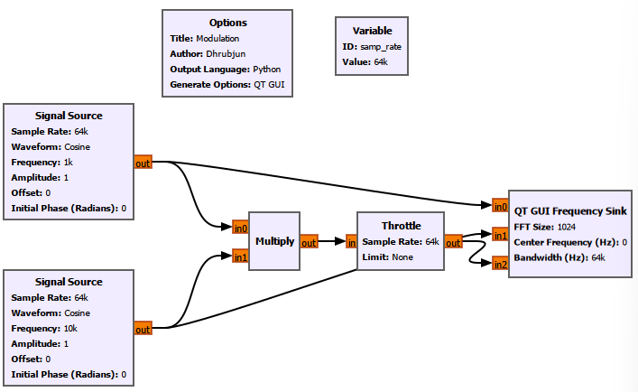
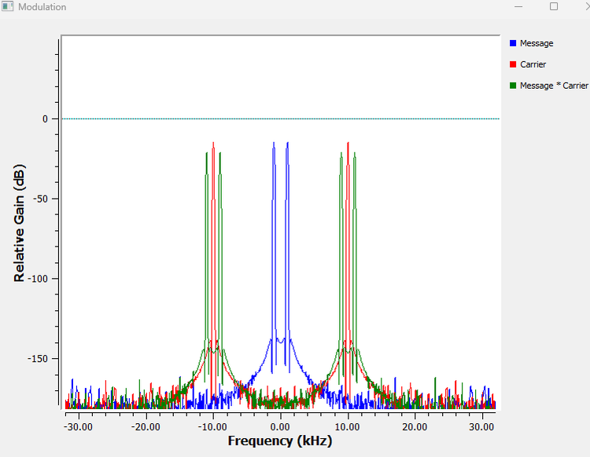
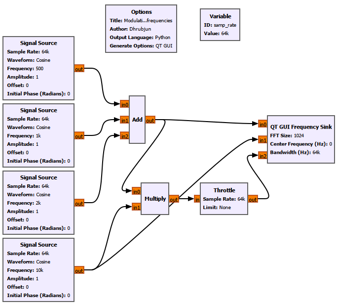
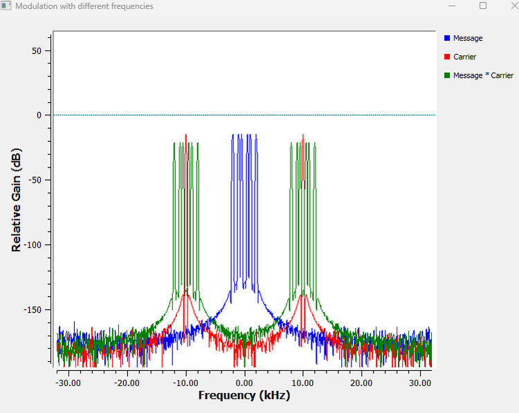
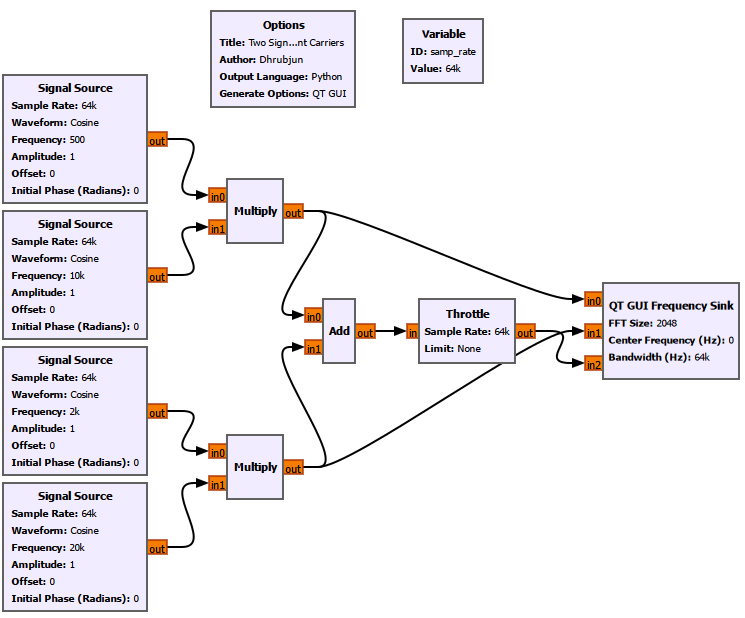
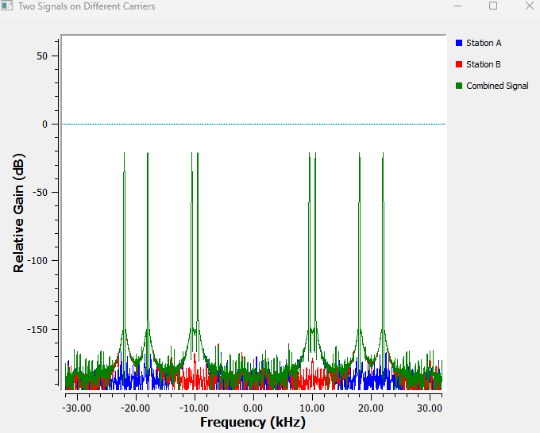
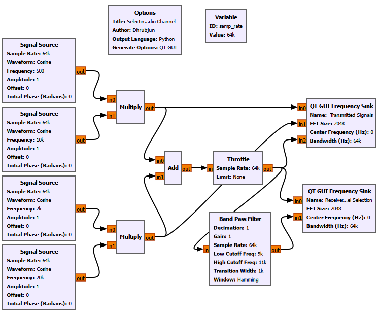
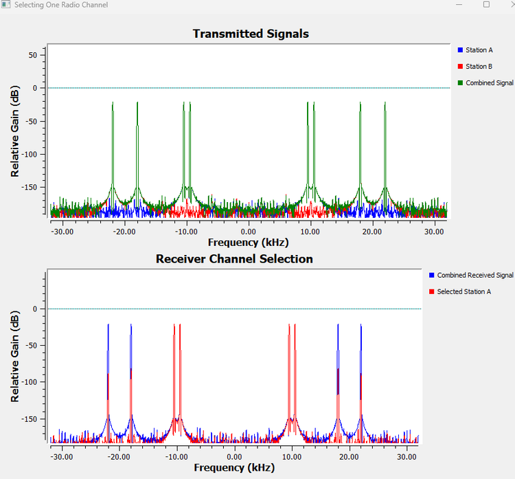
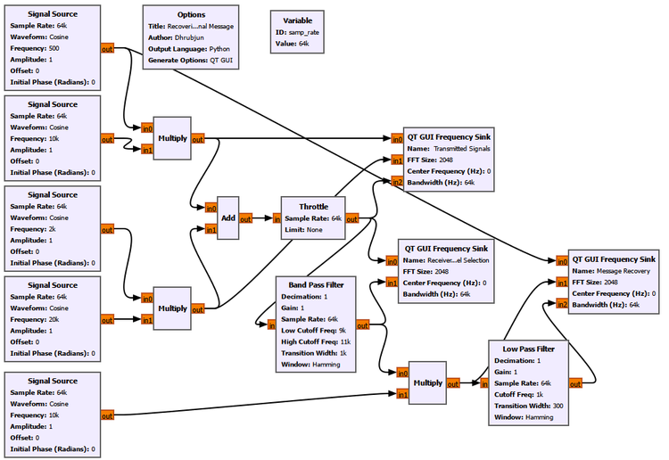
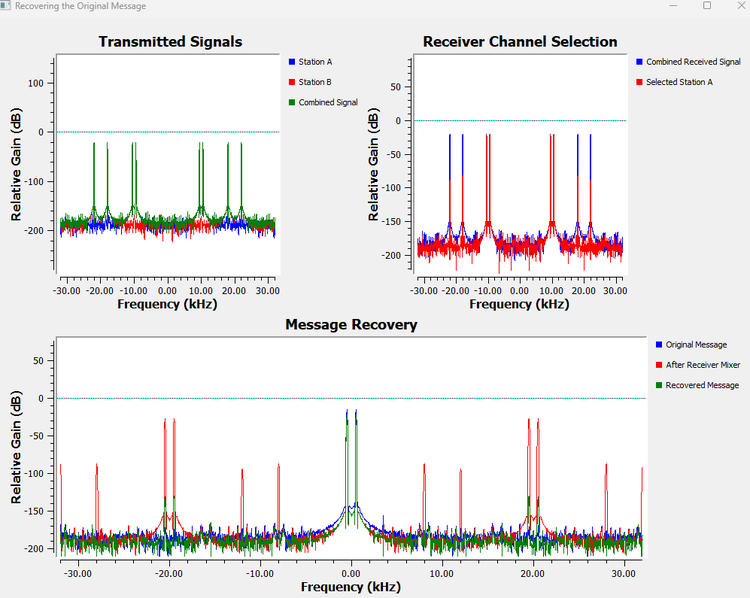

Chapter 12: Why Modulation Exists
Main Question
Why can’t we simply transmit our original low-frequency information signal directly?
So far, most of the signals in this book have lived comfortably inside GNU Radio.
We have generated sinusoids, sampled them, looked at their spectra, worked with real and complex signals, filtered unwanted frequencies, studied convolution, and finally used correlation and matched filtering to detect known signals in noise.
But there is still an important gap in our receiver story.
Suppose the information we want to send is ordinary speech, music, or some slowly varying sensor signal. Why do radio systems not simply feed that low-frequency information directly to an antenna?
Why do we need a carrier at all?
This chapter is about answering that question.
We will not begin by memorizing different modulation schemes. Instead, we will build the idea step by step.
First, we will look at what goes wrong when the information itself is at a very low frequency. Then we will use multiplication to move that information to another part of the spectrum. After that, we will place two different messages around two different carrier frequencies, combine them, select one of them at the receiver, and finally recover the original message.
By the end of the chapter, we will have built a small but complete communication chain:
``` Information | v Modulation | v Different frequency region | v Shared medium | v Channel selection | v Demodulation | v Recovered information ```
The purpose is not yet to study every type of analog modulation. That comes next.
For now, we want to understand why modulation exists in the first place.
12.1 The Information Signal Is Not the Problem
Suppose our information is a 1 kHz audio tone:
\[ m(t)=\cos(2\pi 1000t). \]
There is nothing wrong with this signal as information.
We can send a 1 kHz electrical signal through a wire. Audio circuits routinely handle signals in this frequency range.
The problem begins when we want to radiate the signal efficiently through space using an antenna.
An electromagnetic wave has a wavelength related to its frequency by
\[ \lambda=\frac{c}{f}, \]
where
- \(\lambda\) is the wavelength,
- \(c\) is the speed of light, approximately \(3\times10^8\) m/s,
- \(f\) is the frequency.
For a 1 kHz electromagnetic wave,
\[ \lambda = \frac{3\times10^8}{1000} = 300\,000\text{ m}. \]
Therefore,
\[ \lambda=300\text{ km}. \]
That is an enormous wavelength.
Why do we often compare antenna size with \(\lambda/4\)?
At this point, a natural question is:
Why do antenna discussions suddenly start dividing the wavelength by four?
An antenna does not have to be exactly one quarter wavelength long. There are many antenna types, and practical antennas can also be electrically shortened.
However, antenna dimensions are strongly related to wavelength. Two very common resonant structures are the half-wave dipole, whose total length is approximately
\[ L\approx\frac{\lambda}{2}, \]
and the quarter-wave monopole, whose length is approximately
\[ L\approx\frac{\lambda}{4}. \]
A quarter-wave monopole is therefore a useful reference when we simply want to understand the physical scale of an antenna at a particular frequency.
For 1 kHz,
\[ L\approx\frac{300\text{ km}}{4}=75\text{ km}. \]
This does not mean that radiation at 1 kHz is impossible unless we build a 75 km antenna. It means that an antenna that is tiny compared with such an enormous wavelength becomes difficult to use as an efficient practical radiator, with additional matching and bandwidth challenges.
Now compare that with 100 MHz:
\[ \lambda = \frac{3\times10^8}{100\times10^6} = 3\text{ m}. \]
A quarter wavelength is then
\[ L\approx\frac{3}{4}=0.75\text{ m}. \]
The scale has changed completely.
| Frequency | Wavelength | Approx. quarter wavelength |
|---|---|---|
| 1 kHz | 300 km | 75 km |
| 100 kHz | 3 km | 750 m |
| 1 MHz | 300 m | 75 m |
| 10 MHz | 30 m | 7.5 m |
| 100 MHz | 3 m | 0.75 m |
| 1 GHz | 0.3 m | 7.5 cm |
This gives us the first major reason for using a carrier:
Higher-frequency electromagnetic waves allow practical antenna dimensions and much more convenient radio transmission.
But this creates another problem.
Our information is still at 1 kHz.
How do we move low-frequency information to a much higher frequency without losing the information itself?
That is where modulation begins.
Experiment 12.1: Moving Information Away from Baseband
We already know how a 1 kHz sinusoid looks in time and frequency, so there is no reason to repeat another basic Signal Source experiment.
Instead, we will immediately try something new.
Let the message be
\[ m(t)=\cos(2\pi f_m t), \]
with
\[ f_m=1\text{ kHz}. \]
Now create another sinusoid at
\[ f_c=10\text{ kHz}. \]
We will call this the carrier:
\[ c(t)=\cos(2\pi f_c t). \]
The carrier by itself contains none of our 1 kHz message information. It is simply a higher-frequency sinusoid.
Now multiply the two signals:
\[ s(t)=m(t)c(t). \]
For this experiment, use
``` samp_rate = 64k ```
so that the Nyquist frequency is
\[ f_N=\frac{64\text{ kHz}}{2}=32\text{ kHz}. \]
This gives us plenty of room to observe the frequencies produced by the multiplication.
GNU Radio settings
Use two Signal Source blocks.
For the message:
| Setting | Value |
|---|---|
| Output Type | Float |
| Waveform | Cosine |
| Frequency | `1k` |
| Amplitude | `1` |
| Offset | `0` |
| Initial Phase | `0` |
| Sample Rate | `samp_rate` |
For the carrier:
| Setting | Value |
|---|---|
| Output Type | Float |
| Waveform | Cosine |
| Frequency | `10k` |
| Amplitude | `1` |
| Offset | `0` |
| Initial Phase | `0` |
| Sample Rate | `samp_rate` |
Connect both to a Multiply block.
Use a Throttle at
``` samp_rate ```
because this is a simulated flowgraph with no hardware source or sink controlling the sample rate.
Use a QT GUI Frequency Sink with three inputs so that we can compare:
- `Message`
- `Carrier`
- `Message * Carrier`
A useful Frequency Sink configuration is:
| Setting | Value |
|---|---|
| FFT Size | `2048` |
| Center Frequency | `0` |
| Bandwidth | `samp_rate` |
The complete flowgraph is shown below.

The result is:

The blue message appears at
\[ f=\pm1\text{ kHz}, \]
and the red carrier appears at
\[ f=\pm10\text{ kHz}. \]
Both are real-valued cosines, so the positive- and negative-frequency components appear as mirror pairs.
The interesting part is the green trace.
After multiplication, the new positive-frequency components appear at approximately
\[ 9\text{ kHz} \]
and
\[ 11\text{ kHz}. \]
There is no green component at the original 1 kHz location, and there is no green component exactly at 10 kHz.
Why?
Now the mathematics explains what GNU Radio has already shown us.
Using
\[ \cos A\cos B = \frac{1}{2}\cos(A-B) + \frac{1}{2}\cos(A+B), \]
we obtain
\[ s(t) = \cos(2\pi f_m t)\cos(2\pi f_c t) \]
and therefore
\[ s(t) = \frac{1}{2}\cos\left[2\pi(f_c-f_m)t\right] + \frac{1}{2}\cos\left[2\pi(f_c+f_m)t\right]. \]
With
\[ f_m=1\text{ kHz} \]
and
\[ f_c=10\text{ kHz}, \]
the two positive-frequency components are
\[ f_c-f_m=9\text{ kHz} \]
and
\[ f_c+f_m=11\text{ kHz}. \]
So
\[ s(t) = \frac{1}{2}\cos(2\pi 9000t) + \frac{1}{2}\cos(2\pi 11000t). \]
GNU Radio has shown us our first frequency translation.
The component below the carrier,
\[ f_c-f_m, \]
is called the lower sideband.
The component above the carrier,
\[ f_c+f_m, \]
is called the upper sideband.
For this experiment,
\[ \text{LSB}=9\text{ kHz} \]
and
\[ \text{USB}=11\text{ kHz}. \]
The original message information has not disappeared. Its spectral structure has been moved to a region around the carrier.
Why are there negative-frequency components too?
Because all the signals in this experiment are real-valued.
For a real signal,
\[ X(-f)=X^*(f). \]
The negative-frequency half is therefore the conjugate mirror of the positive-frequency half.
The components at \(-9\) kHz and \(-11\) kHz are not another radio transmission that we need to remove. Together with the positive-frequency components, they form the mathematical Fourier representation of one real waveform.
This is also different from the terms lower sideband and upper sideband.
On the positive-frequency side, 9 kHz is the lower sideband and 11 kHz is the upper sideband. Their negative-frequency counterparts are simply the corresponding mirror components.
For convenience, we will often discuss only the positive-frequency side of a real RF spectrum.
### GNU Radio Toolbox: Multiply
Multiply multiplies its input streams sample by sample.
If the two inputs are sinusoids at frequencies \(f_1\) and \(f_2\), multiplication creates components at the sum and difference frequencies:
\[ f_1+f_2 > \]
and
\[ |f_1-f_2|. > \]
This makes multiplication one of the fundamental operations used for frequency translation, mixing, modulation, and demodulation.
We have used multiplication in simpler contexts before, but here it takes on its communication-system meaning: it moves information from one frequency region to another.
12.2 Modulation Does Not Just Move One Tone
Experiment 12.1 used a single 1 kHz message.
That makes the result easy to understand, but real information is rarely a single sinusoid.
Speech contains many frequency components. Music contains even more. A sensor waveform can also occupy a continuous band of frequencies.
So the next question is more important:
If a message contains several frequencies, does multiplication move the whole message spectrum?
Experiment 12.2: Translating a Multi-Frequency Message
Create three message components:
\[ f_1=500\text{ Hz}, \]
\[ f_2=1\text{ kHz}, \]
and
\[ f_3=2\text{ kHz}. \]
Add them together:
\[ m(t) = \cos(2\pi500t) + \cos(2\pi1000t) + \cos(2\pi2000t). \]
Then multiply the complete message by the same 10 kHz carrier.
The important point is that we are not separately modulating three unrelated signals. The Add block first creates one message containing three frequency components, and the complete message is then passed to the Multiply block.
Use:
``` samp_rate = 64k ```
Message Signal Sources
Use three Float Signal Sources:
| Source | Frequency | Amplitude Waveform |
|---|---|---|
| Message component 1 | `500` | `1` Cosine |
| Message component 2 | `1k` | `1` Cosine |
| Message component 3 | `2k` | `1` Cosine |
All three use
``` Sample Rate = samp_rate Offset = 0 Initial Phase = 0 ```
Add the three signals using an Add block.
The carrier remains:
``` Frequency = 10k Amplitude = 1 Waveform = Cosine Sample Rate = samp_rate ```
Multiply the combined message by the carrier.
Use a QT GUI Frequency Sink to compare:
- `Message`
- `Carrier`
- `Message * Carrier`
The flowgraph is:

The result is:

Before modulation, the positive-frequency message components are
\[ 0.5,\quad1,\quad2\text{ kHz}. \]
After multiplication by the 10 kHz carrier, every component produces a lower and an upper translated component.
** ———————————————————————–** Original message Lower sideband Upper sideband | component | component | component | | — | — | — | | 0.5 kHz | 9.5 kHz | 10.5 kHz |
1 kHz 9 kHz 11 kHz
2 kHz 8 kHz 12 kHz** ———————————————————————–**
The green trace therefore occupies a region around 10 kHz.
This is a much more useful way to think about modulation:
Modulation can translate the structure of an entire baseband spectrum to a new frequency region.
If the original message occupied a continuous baseband from 0 to \(B\), multiplication by a carrier at \(f_c\) would create translated spectral content around the carrier, extending from
\[ f_c-B \]
to
\[ f_c+B. \]
The message has not been converted into different information. Its frequency location has changed.
That distinction matters.
When we say that a radio station transmits around 100 MHz, we do not mean that a human voice has somehow become a 100 MHz audio tone. We mean that the low-frequency information has been represented through variations of a much higher-frequency RF waveform.
Experiment 12.3: Two Signals on Different Carriers
We will create two simplified radio stations.
Station A uses
\[ f_{mA}=500\text{ Hz} \]
with a carrier at
\[ f_{cA}=10\text{ kHz}. \]
Station B uses
\[ f_{mB}=2\text{ kHz} \]
with a carrier at
\[ f_{cB}=20\text{ kHz}. \]
The two modulated signals are
\[ s_A(t) = m_A(t)\cos(2\pi f_{cA}t) \]
and
\[ s_B(t) = m_B(t)\cos(2\pi f_{cB}t). \]
Finally, add them:
\[ s(t)=s_A(t)+s_B(t). \]
Use
``` samp_rate = 64k ```
throughout the experiment.
GNU Radio settings
Station A:
| Block | Frequency | Amplitude |
|---|---|---|
| Message Signal Source | `500` | `1` |
| Carrier Signal Source | `10k` | `1` |
Station B:
| Block | Frequency | Amplitude |
|---|---|---|
| Message Signal Source | `2k` | `1` |
| Carrier Signal Source | `20k` | `1` |
All four Signal Sources use:
``` Output Type = Float Waveform = Cosine Offset = 0 Initial Phase = 0 Sample Rate = samp_rate ```
Use one Multiply block for each station and an Add block to combine the two modulated signals.
Use a QT GUI Frequency Sink with three traces:
- `Station A`
- `Station B`
- `Combined Signal`
A useful title for the Options block and display is:
``` Two Signals on Different Carriers ```
The flowgraph is:

For Station A,
\[ f_{cA}-f_{mA} = 10-0.5 = 9.5\text{ kHz}, \]
and
\[ f_{cA}+f_{mA} = 10+0.5 = 10.5\text{ kHz}. \]
For Station B,
\[ f_{cB}-f_{mB} = 20-2 = 18\text{ kHz}, \]
and
\[ f_{cB}+f_{mB} = 20+2 = 22\text{ kHz}. \]
The result is:

The green Combined Signal contains both transmissions at the same time.
Yet the two messages occupy different frequency regions.
Station A is around 10 kHz.
Station B is around 20 kHz.
This is the basic idea behind frequency-division multiplexing: different signals can share the same medium by occupying different frequency regions.
We do not need a full treatment of multiplexing here. What matters is the communication idea:
A carrier gives a transmitter an address in frequency.
That is why many radio stations can be present in the air at the same time.
12.4 What Does Tuning a Radio Actually Mean?
Experiment 12.3 gives us a useful connection to everyday radio.
Suppose several stations are transmitting at the same time.
One may occupy a channel around one RF frequency and another may occupy a different channel.
The antenna at our receiver does not magically receive only the station we want. Many signals can arrive at the antenna together.
Conceptually:
``` Station A ──► frequency region A ──┐ │ Station B ──► frequency region B ──┼──► Air ──► Receiver antenna │ Station C ──► frequency region C ──┘ ```
The receiver must decide which part of the spectrum it wants.
This is what makes the familiar act of tuning a radio meaningful.
When we tune an FM radio to a station around 100 MHz, the music itself is not a 100 MHz sound. Human ears could never hear such a frequency.
The voice or music is still low-frequency information.
The transmitter has used modulation to place that information into an RF channel around its assigned carrier frequency.
At the receiver, tuning means selecting the desired frequency region.
But there is another important point:
Tuning is not the same as demodulation.
Selecting a station gives us the desired modulated channel.
We still have to recover the original information from it.
The receiver story is therefore
``` Many received channels | v Select desired channel | v Desired modulated signal | v Demodulate | v Original information ```
We can demonstrate both steps in GNU Radio.
Experiment 12.4: Selecting One Radio Channel
Continue from Experiment 12.3.
The combined signal contains Station A around 10 kHz and Station B around 20 kHz.
Now imagine that this combined signal has arrived at the receiver and we want Station A.
We already know a tool that can select a particular frequency region: a band-pass filter.
Station A contains components at
\[ 9.5\text{ kHz} \]
and
\[ 10.5\text{ kHz}. \]
So use a Band-Pass Filter with:
| Setting | Value |
|---|---|
| Decimation | `1` |
| Gain | `1` |
| Sample Rate | `samp_rate` |
| Low Cutoff Frequency | `9k` |
| High Cutoff Frequency | `11k` |
| Transition Width | `1k` |
| Window | Hamming |
Use two QT GUI Frequency Sinks.
The first is titled:
``` Transmitted Signals ```
and displays:
- `Station A`
- `Station B`
- `Combined Signal`
The second is titled:
``` Receiver Channel Selection ```
and displays:
- `Combined Received Signal`
- `Selected Station A`
A clear GUI arrangement is to place the two sinks in separate rows or otherwise give each enough horizontal space to make the frequency components easy to distinguish.
The complete flowgraph is:

The result is:

The upper display shows both transmitted stations.
In the receiver display, the blue Combined Received Signal still contains both channels.
After the Band-Pass Filter, the red Selected Station A trace remains around
\[ 9.5\text{ kHz} \]
and
\[ 10.5\text{ kHz}, \]
while the components belonging to Station B around 18 kHz and 22 kHz are strongly suppressed.
This is our simplified model of radio channel selection.
The real RF front end of a radio or SDR can perform tuning and channel selection using RF filters, mixers, local oscillators, complex downconversion, and digital filters. Our Band-Pass Filter is not intended to reproduce every detail of that hardware.
It is showing the central idea:
Different carriers place signals in different spectral regions, and the receiver can select the region containing the signal it wants.
But look carefully at the selected signal.
It is still around 10 kHz.
Our original message was at 500 Hz.
We have selected the correct station, but we have not yet recovered its information.
That requires demodulation.
12.5 Bringing the Information Back
Station A began as
\[ m_A(t)=\cos(2\pi500t). \]
After modulation by the 10 kHz carrier, its positive-frequency components moved to
\[ 9.5\text{ kHz} \]
and
\[ 10.5\text{ kHz}. \]
The Band-Pass Filter selected those components.
Now suppose the receiver multiplies the selected signal by another 10 kHz sinusoid.
This receiver sinusoid is called a local oscillator, or LO.
Consider the 9.5 kHz component.
Mixing it with 10 kHz creates
\[ 10-9.5=0.5\text{ kHz} \]
and
\[ 10+9.5=19.5\text{ kHz}. \]
Now consider the 10.5 kHz component.
It creates
\[ 10.5-10=0.5\text{ kHz} \]
and
\[ 10.5+10=20.5\text{ kHz}. \]
Something very useful has happened.
The original
\[ 500\text{ Hz} \]
frequency has reappeared.
But it is accompanied by unwanted high-frequency mixing products around 20 kHz.
This time, a low-pass filter is exactly what we need.
Experiment 12.5: Recovering the Original Message
Extend the receiver from Experiment 12.4.
After the Band-Pass Filter, multiply Selected Station A by a new 10 kHz Signal Source.
Use this new Signal Source as the receiver local oscillator:
| Setting | Value |
|---|---|
| Output Type | Float |
| Waveform | Cosine |
| Frequency | `10k` |
| Amplitude | `1` |
| Offset | `0` |
| Initial Phase | `0` |
| Sample Rate | `samp_rate` |
Then pass the mixer output through a Low-Pass Filter.
Use:
| Setting | Value |
|---|---|
| Decimation | `1` |
| Gain | `1` |
| Sample Rate | `samp_rate` |
| Cutoff Frequency | `1k` |
| Transition Width | `300` |
| Window | Hamming |
Why a 1 kHz cutoff?
Our desired message is at 500 Hz, so
\[ 500\text{ Hz}<1\text{ kHz}. \]
The unwanted mixer products are around 19.5 kHz and 20.5 kHz, far outside the low-pass region.
The LPF therefore passes the recovered message and rejects the high-frequency products.
For this experiment, use three QT GUI Frequency Sinks.
Transmitted Signals
Display:
- `Station A`
- `Station B`
- `Combined Signal`
Receiver Channel Selection
Display:
- `Combined Received Signal`
- `Selected Station A`
Message Recovery
Display:
- `Original Message`
- `After Receiver Mixer`
- `Recovered Message`
A useful GUI layout is:
``` ┌────────────────────────┬────────────────────────┐ │ Transmitted Signals │ Receiver Channel │ │ │ Selection │ └────────────────────────┴────────────────────────┘ ┌─────────────────────────────────────────────────┐ │ Message Recovery │ └─────────────────────────────────────────────────┘ ```
The corresponding GUI Hints are:
``` Transmitted Signals: 0,0,1,1 Receiver Channel Selection: 0,1,1,1 Message Recovery: 1,0,1,2 ```
Use the Options title:
``` Recovering the Original Message ```
The complete flowgraph is:

The result is:

The three displays now tell the entire communication story.
Transmitted Signals
Station A and Station B occupy separate frequency regions, and the Combined Signal contains both.
Receiver Channel Selection
The receiver initially sees both stations.
The Band-Pass Filter keeps Station A and suppresses Station B.
Message Recovery
The blue Original Message appears at
\[ \pm0.5\text{ kHz}. \]
After the receiver mixer, the red spectrum contains the desired component again at
\[ \pm0.5\text{ kHz}, \]
but it also contains high-frequency components around
\[ \pm19.5\text{ kHz} \]
and
\[ \pm20.5\text{ kHz}. \]
The Low-Pass Filter removes those high-frequency products.
The green Recovered Message is left at
\[ \boxed{\pm500\text{ Hz}}. \]
We have brought the information back to baseband.
### GNU Radio Toolbox: Band-Pass Filter
A Band-Pass Filter passes a selected range of frequencies while attenuating frequencies outside that range.
In Experiment 12.4, the combined received signal contains two different channels. We use the Band-Pass Filter to keep the region from approximately 9 kHz to 11 kHz, which contains Station A.
In a practical receiver, channel selection may involve several analog and digital stages. Here, the Band-Pass Filter gives us a simple and visible way to understand the basic idea of tuning to one frequency region.
### GNU Radio Toolbox: Low-Pass Filter in a Demodulator
We have already used low-pass filtering earlier in the book, so the block itself is not new.
Its role here is new.
After the receiver multiplies the selected station by its local oscillator, the desired message returns near zero frequency, but additional high-frequency mixing products are also created.
The Low-Pass Filter keeps the recovered baseband message and removes those unwanted high-frequency components.
This combination,
``` text Mixer -> Low-Pass Filter ```
is a fundamental receiver structure that we will encounter again.
12.6 Why Is the Recovered Signal Smaller?
In Experiment 12.5, the recovered message has the correct frequency, but its amplitude is smaller than the original.
This is expected.
At the transmitter, we formed
\[ s(t)=m(t)\cos(2\pi f_ct). \]
At the receiver, we multiply by the same carrier frequency again:
\[ s(t)\cos(2\pi f_ct) = m(t)\cos^2(2\pi f_ct). \]
Using
\[ \cos^2\theta = \frac{1}{2} + \frac{1}{2}\cos(2\theta), \]
we obtain
\[ m(t)\cos^2(2\pi f_ct) = \frac{1}{2}m(t) + \frac{1}{2}m(t)\cos(4\pi f_ct). \]
The first term is our recovered baseband message:
\[ \frac{1}{2}m(t). \]
The second term is at high frequency and is removed by the Low-Pass Filter.
Therefore, ideally,
\[ y(t)=\frac{1}{2}m(t). \]
So the smaller recovered amplitude is not an error.
A later gain stage could compensate for this if necessary.
The important result is that the original information has returned to the correct baseband frequency.
12.7 We Have Built a Small Communication System
It is worth stopping here and looking at what the five experiments have built.
We started with a low-frequency message.
We discovered that multiplication by a carrier moves its spectral content.
Then we used two carriers to place two different messages in different frequency regions.
We added them together, just as multiple transmissions can share a physical medium.
At the receiver, we selected one frequency region.
Finally, we mixed that selected channel back toward baseband and used a Low-Pass Filter to recover the original message.
The complete chain is:
``` TRANSMITTER
500 Hz Message A | v Multiply by 10 kHz carrier | v Station A around 10 kHz ——–\\ \\ +–> Shared medium / Station B around 20 kHz ——–/ ^ | Multiply by 20 kHz carrier ^ | 2 kHz Message B
RECEIVER
Both stations arrive
|
v
Select around 10 kHz
|
v
Station A
|
v
Multiply by 10 kHz LO
|
v
Baseband + high-frequency products
|
v
Low-Pass Filter
|
v
Recovered 500 Hz message```
This is deliberately simplified, but the ideas are real.
A practical radio has more stages, and actual modulation schemes can be more sophisticated. Yet the basic logic remains recognizable:
\[ \boxed{ \text{information} \rightarrow \text{modulation} \rightarrow \text{channel} \rightarrow \text{selection} \rightarrow \text{demodulation} \rightarrow \text{information} } \]
12.8 Connecting the GNU Radio Experiment to a Real Radio
The frequencies in our experiments were intentionally small.
We used 10 kHz and 20 kHz carriers because they fit comfortably inside a 64 kS/s GNU Radio simulation and are easy to see on the Frequency Sink.
A real radio system may use carriers in the MHz or GHz range.
The principle is still the same.
Suppose several radio stations are transmitting.
Their audio programs may all contain similar baseband frequencies. One station may be broadcasting speech, another music, and another a news program. The audio spectra can overlap heavily if we look only at the original information.
The stations therefore use different RF channels.
Conceptually:
``` Audio A -> modulation -> RF channel A Audio B -> modulation -> RF channel B Audio C -> modulation -> RF channel C ```
All three electromagnetic waves can reach the same receiving antenna.
The receiver then chooses the desired RF channel.
This is why a radio has something to tune.
When we tune to a station, we are not choosing the frequency of the sound we want to hear. We are choosing the RF frequency region in which that station has placed its information.
After the channel is selected, the receiver demodulates it.
Only then do we recover the low-frequency audio that can eventually be sent to a speaker.
So the everyday action
“Tune the radio to this station”
really hides two different ideas:
- Select the desired RF channel.
- Demodulate that channel to recover the information.
Experiment 12.4 demonstrated the first.
Experiment 12.5 demonstrated the second.
12.9 A Carrier Is Not the Message
Another useful distinction is now easier to make.
A carrier such as
\[ c(t)=\cos(2\pi f_ct) \]
is just a sinusoid.
By itself, it tells us nothing about the message.
The information appears when some property of the transmitted waveform is made dependent on the message.
In our experiments, we used multiplication:
\[ s(t)=m(t)\cos(2\pi f_ct). \]
This created sidebands around the carrier frequency.
So it is better to think of the carrier as a way of placing information into a chosen frequency region, rather than as the information itself.
This also explains why the red 10 kHz carrier trace in Experiment 12.1 was visible only because we connected the original carrier separately to the Frequency Sink.
The actual product signal did not contain a spectral line exactly at 10 kHz.
That detail will become important in the next chapter.
12.10 What Exactly Did We Build?
The modulation used in our experiments has the form
\[ s(t)=m(t)\cos(2\pi f_ct). \]
For a sinusoidal message, this produces two sidebands but no separate carrier component at \(f_c\).
This modulation method is called double-sideband suppressed-carrier, usually abbreviated DSB-SC.
We did not begin the chapter by giving it that name because the name is less important than understanding what the multiplication actually does.
Now that we have seen the spectrum, the terminology makes sense:
- double-sideband because both the lower and upper sidebands are present,
- suppressed-carrier because the transmitted product does not contain a separate carrier spectral line at \(f_c\).
Our receiver also used a matching local oscillator to recover the message. This is a form of coherent demodulation.
For our controlled GNU Radio experiment, the transmitter carrier and receiver local oscillator were both exactly 10 kHz and had matching phase.
A real receiver has to deal with practical issues such as carrier-frequency error and phase error. We will not add those complications here because the purpose of this chapter is to understand why modulation is needed.
12.11 Real RF Signals and Complex I/Q Signals
Earlier in the book, we spent time understanding complex signals and positive and negative frequencies.
Now we can connect that discussion to radio.
The physical voltage driving an antenna is real-valued. The electromagnetic fields radiated through space are also physical, real quantities.
So a physical RF waveform is real.
For example,
\[ s(t)=A\cos(2\pi f_ct+\phi) \]
is a real RF waveform.
Its mathematical two-sided Fourier spectrum contains both positive- and negative-frequency components.
Inside an SDR, however, we very often represent signals using complex I/Q samples:
\[ x[n]=I[n]+jQ[n]. \]
A complex signal does not need to have conjugate symmetry between positive and negative frequencies.
This is extremely useful.
If an SDR is tuned to an RF center frequency \(f_c\), then a complex-baseband component at a positive offset can represent RF content above the center frequency, while a negative offset can represent RF content below it.
For example, if the SDR is centered at
\[ 100\text{ MHz}, \]
then, under the usual convention,
\[ +1\text{ MHz} \]
at complex baseband corresponds to RF content around
\[ 101\text{ MHz}, \]
while
\[ -1\text{ MHz} \]
corresponds to RF content around
\[ 99\text{ MHz}. \]
So both statements are true:
Physical RF waveforms are real-valued.
and
SDRs commonly process those waveforms using complex I/Q representations.
A complex signal also does not automatically mean a one-sided spectrum. A complex signal can contain only positive or only negative frequency, but a general complex SDR signal may contain both. The important difference is that the two sides no longer have to be mirror images.
This is one reason I/Q processing is so useful for modulation, mixing, filtering, and channel selection.
12.12 Why We Did Not Filter Away the Negative Frequencies
When we first saw the modulated spectrum, it was tempting to look at the negative-frequency half and ask whether a low-pass filter should remove it.
That is not what we want to do.
For the real-valued signals used in these experiments, the negative-frequency spectrum is required by the real waveform’s conjugate symmetry.
For example, a real cosine can be written as
\[ \cos(2\pi ft) = \frac{1}{2}e^{j2\pi ft} + \frac{1}{2}e^{-j2\pi ft}. \]
The \(+f\) and \(-f\) terms together describe the real cosine.
The Low-Pass Filter in Experiment 12.5 had a completely different job.
After the receiver mixer, the desired information returned near zero frequency while unwanted products appeared around 20 kHz.
The LPF separated low-frequency desired content from high-frequency mixing products.
It was not removing “the negative half” of a real spectrum.
Keeping those two ideas separate will become especially important when we later study single-sideband signals and complex modulation.
12.13 Modulated Signals Occupy Bandwidth
A carrier is often drawn as one vertical line in a spectrum.
A real message, however, occupies a range of frequencies.
Once that message is modulated, its translated spectrum also occupies a range around the carrier.
This means two communication channels cannot simply be placed arbitrarily close together.
If their occupied spectral regions overlap too much, one channel can interfere with the other.
Real communication systems therefore care about:
- signal bandwidth,
- channel bandwidth,
- channel spacing,
- filtering,
- adjacent-channel interference,
- frequency allocation.
We do not need another GNU Radio experiment for those ideas yet. The important point follows directly from Experiment 12.2:
Modulation moves a spectrum, not just a single infinitely thin frequency line.
This is why spectrum is a limited resource and why real radio services are assigned particular frequency bands and channels.
12.14 Frequency Also Affects Propagation
Antenna size and channel separation are not the only reasons different radio systems use different carrier frequencies.
Electromagnetic waves at different frequency ranges can behave differently in the real world.
Depending on frequency and environment, radio waves can differ in how they:
- propagate over long distances,
- interact with the ground and terrain,
- penetrate buildings and materials,
- diffract around obstacles,
- interact with the atmosphere or ionosphere,
- support available communication bandwidth.
We will not turn this chapter into a propagation chapter.
The important connection is simply that modulation gives us the freedom to place information in a frequency range that is useful for the communication system we are trying to build.
12.15 So Why Does Modulation Exist?
We can now answer the question that opened the chapter.
Why not simply transmit our original low-frequency information directly?
There is not just one reason.
Practical radiation
Low-frequency information corresponds to extremely long electromagnetic wavelengths. Practical resonant antenna dimensions become very large, and antennas that are electrically tiny compared with the wavelength are difficult to use efficiently.
Moving information to a higher carrier frequency makes practical radio transmission possible.
Multiple users
Different transmitters often generate information occupying similar baseband frequency ranges.
Modulation allows those messages to be placed in different parts of the spectrum.
That lets many signals share the same physical medium.
Channel selection
Once different transmissions occupy different frequency regions, a receiver can tune to the desired channel and reject others.
Suitable frequency ranges
Different frequency bands have different antenna, propagation, bandwidth, and regulatory characteristics.
Modulation lets the information be placed in a frequency region appropriate for the application.
The central idea is therefore:
Modulation lets us take information from where it naturally exists and place it where it is useful for transmission.
And demodulation brings it back.
12.16 What We Learned
In this chapter, we built the reason for modulation experimentally.
- A low-frequency information signal can be perfectly useful in a wire but inconvenient for direct radio radiation.
- Wavelength is related to frequency by \[ \lambda=\frac{c}{f}. \]
- A quarter-wave monopole is a useful reference for understanding antenna scale, although not every antenna must be exactly \(\lambda/4\) long.
- Multiplying a message by a sinusoidal carrier creates sum and difference frequencies.
- A 1 kHz message multiplied by a 10 kHz carrier produced components at 9 kHz and 11 kHz.
- These are the lower and upper sidebands.
- A complete multi-frequency message spectrum can be translated around a carrier.
- Real-valued signals have conjugate-symmetric positive- and negative-frequency spectra.
- The negative-frequency half is not something that should simply be removed with an LPF.
- Different messages can be placed around different carrier frequencies.
- This allows several transmissions to coexist in the same medium.
- Tuning means selecting the desired frequency region.
- Tuning and demodulation are different operations.
- Mixing the selected channel with a local oscillator can bring the information back toward baseband.
- A Low-Pass Filter can then remove unwanted high-frequency mixing products.
- Our recovered 500 Hz message appeared at the same frequency as the original.
- The recovered amplitude was half the original in our ideal coherent multiplication experiment, which follows directly from the \(\cos^2\) identity.
- The simple modulation used here is DSB-SC.
- Physical RF signals are real-valued, while SDRs commonly use complex I/Q samples internally.
- Modulated signals occupy bandwidth, so practical channels need appropriate spacing and filtering.
Most importantly, we have moved from treating modulation as a word to seeing what it actually does.
It moves information in frequency.
That one operation makes practical antennas, frequency sharing, tuning, and radio communication possible.
12.17 Connecting to the Next Chapter
We now understand why a carrier is useful and why information needs to be moved away from its original baseband location.
But our first modulation method was deliberately simple:
\[ s(t)=m(t)\cos(2\pi f_ct). \]
It produced two sidebands and suppressed the carrier itself.
That was ideal for understanding frequency translation, but it is not the only way to place information onto a carrier.
A very natural next question is:
What if we make the amplitude of a carrier vary according to the message?
That leads us to Amplitude Modulation.
In the next chapter, we will look carefully at how ordinary AM differs from the DSB-SC signal we built here, why a carrier component appears in conventional AM, what the modulation index means, what overmodulation looks like, and how the message can be recovered from the envelope.
The important thing is that we are no longer starting AM from an unexplained formula.
We already know why modulation is needed.
Now we are ready to study how a particular modulation scheme works.